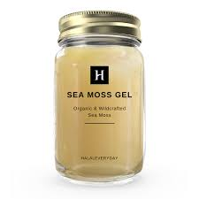
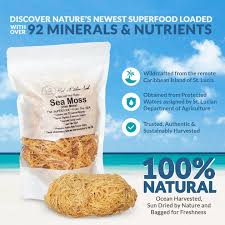

FACTS ABOUT SEA MOSS

- 1.Some studies suggest that sea moss may have potential antiviral, antibacterial, and anticoagulant properties, although more research is needed to confirm these findings.
- 2.Sea moss is available in different forms, including dried, powdered, and in capsule or supplement form.
- 3.It is a popular ingredient in vegan and vegetarian diets as it can be used as a substitute for gelatin.
- 4.It is a natural source of carrageenan, a type of polysaccharide that is widely used as a thickening agent in the food and cosmetic industries.
- 5.It has been used for centuries in traditional Irish and Caribbean cuisine and has gained popularity in recent years as a superfood.
